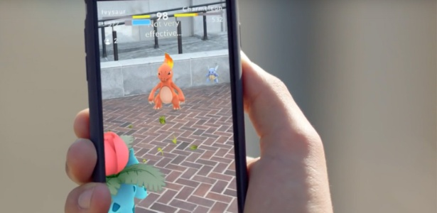

O que é Realidade Aumentada? Quais os tipos? RA no mercado de trabalho, como funciona?
A realidade aumentada é uma versão aprimorada e interativa de um ambiente real obtido por meio de elementos visuais, sonoros e outros estímulos sensoriais digitais por meio de tecnologia holográfica. A RA incorpora três recursos: uma combinação de mundos digitais e físicos, as interações feitas em tempo real e a identificação 3D exata de objetos virtuais e reais.
À medida que surgem cada vez mais formas de realidade virtual, acompanhar o ritmo torna-se um desafio devido às nuances sutis. Os formatos de realidade digital são variados, sendo estes alguns deles:
Há também dois tipos de realidade aumentada: com base em marcador e sem marcadores. Essa escolha determinará como você poderá exibir imagens e informações.
MICROSOFT CORPORATION. O que é análise aumentada (RA) | Microsoft Dynamics 365. Disponível em:
Engenharia de Software. Disponível em:
Design de Games. Disponível em:
HENZE, A. Realidade Aumentada (RA) vs Realidade Virtual (RV) | A diferença explicada. Disponível em: